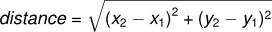

10. Value-returning methods¶
10.1. Methods that return values¶
In an earlier chapter we wrote a void method, drawSquare.
It was called when we wanted it to execute a sequence of steps that caused
the turtle to draw.
Now we write the other kind of method: a value-returning method. In an earlier exercise we saw the standard formula for compound interest:

So let’s code a method that can calculate according to this formula:
1 2 3 4 5 6 | private double finalAmt(double p, double r, int n, double t)
{
// Apply the compound interest formula to p to produce the final amount.
double a = p * Math.Pow((1 + r/n), (n*t));
return a;
}
|
- On line 1 the return type of the method — the type of value it will return — is
double. (In void methods the keywordvoidwas used instead of a return type). - Methods can return strings, booleans, doubles, integers, turtles, etc. — in fact, any type! But we must explicitly say what type the method will return.
- The return statement on line 5 is followed an expression. This expression will be evaluated and returned to the caller. If our method signature promised to return a double, we can’t return a string or a boolean. [1]
- We’ve used the
Powmethod from the built-inMathmodule to raise one value to the power of another. - Because we’re working with money that has decimal points, we’ve used double types for the amount, the rate of interest, and the period (so 5.5 years is possible).
| [1] | In C#, a value-returning method must say what type it intends to return, and it must stick to its promise from the signature. Some other computer languages (e.g. Python) have a more relaxed attitude towards types. Sometimes a single method can return a string, at other times the same method might return an int or a double, or a turtle. |
Once we have a method that captures our desired calculations, (and our mental chunking that allows us to think of a compound interest as a single calculation) it becomes a reusable chunk that we can call from elsewhere. We could use the method in a console-based program, a WPF program, or in some code behind a web page. Here we’ve created a simple WPF application and we show the handler which we’ve attached to the button.
1 2 3 4 5 6 7 8 9 10 11 12 13 14 | private void btnGo_Click(object sender, RoutedEventArgs e)
{
// The double.Parse(string s) method does the same
// as Convert.ToDouble
double toInvest = double.Parse(txtPrincipal.Text);
double rate = double.Parse(txtInterestRate.Text);
int n = int.Parse(txtNumTimesCompounded.Text);
double t = double.Parse(txtYearsInvested.Text);
double final = finalAmt(toInvest, rate, n, t);
txtResult.AppendText(string.Format("Returned from method: {0}\n", final));
txtResult.AppendText(string.Format("Formatted as a currency: {0:C}\n", final));
}
|
Running the program we get results similar to this:
- The first line of output is a bit messy with all these decimal places, but remember that C# doesn’t understand that we’re working with money: C# just does the calculation to the best of its ability, perhaps with some inaccuracy, but without rounding to two decimals.
- In the second line of output we’ve used a fancier feature of the
Formatmethod for strings: this allows us to convert the number according to local currency rules for the computer. This example shows what is displayed if the local currency is South African Rands. Elsewhere in the world the output might show a$14,898.46. So your computer knows what region of the world it is set up for, and what the currency rules are for that region.
Notice something else very important here. The name of the variable we pass as an
argument — toInvest — can be different from the name of the parameter
— p. (But it doesn’t have to be different!)
These short variable names are getting quite tricky, so here are two more versions of our method.
1 2 3 4 5 6 7 8 9 10 11 12 13 | private double finalAmtV2(double principalAmount, double nominalRate,
int numTimesPerYear, double years)
{
double a = principalAmount *
Math.Pow((1 + nominalRate / numTimesPerYear), (numTimesPerYear * years));
return a;
}
private double finalAmtV3(double amt, double rate, int compounded, double years)
{
double a = amt * Math.Pow((1 + rate / compounded), (compounded * years));
return a;
}
|
They all perform exactly the same computation. Use your judgement to write code that can be best understood by other humans! Short variable names are more economical and sometimes make code easier to read: would not be nearly so memorable or elegant if Einstein had used longer variable names! If you do prefer short names, make sure you also have some comments to enlighten the reader about what the variables are used for.
10.2. Scopes and Lifetimes¶
Any object that is created, (e.g. your main window, turtle Tess, a variable) has a scope — that portion of your program in which it can be accessed and used.
When we create a variable inside a method, it only exists inside
the method, it belongs to the method, and we cannot use it outside the method.
We say it has local scope, and we sometimes call it a local variable.
For example, consider the finalAmtV3 method above. If we try to use variable a
outside the method, we’ll get an error. The variable a is local to finalAmtV3.
Additionally, variable a only exists while the method is being
executed — we call this its lifetime.
When the execution of the method ends, all local variables are destroyed.
Parameters are also local, and have local scope and short lifetimes too.
For example, the variables amt, rate, compounded, and years are created when
finalAmtV3 is called, and their lifetime ends when the method completes its execution.
Why is this idea of a lifetime of a variable (or any object) important? Because it is not possible for a method to save some value to a local variable and get it back next time the method is called. Each call of the method creates new local variables, and their lifetimes expire (along with any values they were holding) when the method returns to the caller.
The object that is instantiated from the class that contains our methods also has its own lifetime. Typically, for our applications, our main window object is instantiated (created) when the program starts running. So the main window lifetime is usually starts when the program starts running, and it dies when the window is closed or the application ends.
Any variables defined directly in a class (rather than in a method of the class) are called class-level variables. Their lifetime is not the same as that of a local variable in a method.
Our main window object dies when the application is closed.
So we’ve always defined our turtle variables as class-level variables. And we create the turtle in the constructor (i.e. when the window is born, we create the turtle object). Turtle Tess contains some of its own variables and properties — the brush width, the heading, the position, and so on. When Tess dies, her variables and properties die too. But she will usually only die when the window for the application is closed. Of course we’ll also instantiate Alex, and the variables and properties associated with Alex will persist for his lifetime.
So class-level variables — those defined in the class — have a longer lifetime that local variables defined in a method.
Now the nice thing about class-level variables is that they are in scope — they can be seen and used — by any other method in the class.
So if a method needs to remember a value between calls to itself, (e.g. suppose the method wants to count how many times it has been called so far), it must use a class-level variable to keep this counter.
Class-level variables — We’ve seen this movie before!
Let’s take another look at the very first turtle program we saw.
The variable tess at line 3 is class-level: it
is defined in the class. So it can be used in both the constructor
method (lines 5-9) and the handler method (lines 11-17).
If we mistakenly deleted line 3 and defined Turtle tess = new Turtle(playground) at line 8,
it would be a local variable inside the constructor method MainWindow(). So
- the variable
tesswould not be visible and we’d get errors on lines 13-16, and - even if we commented out the lines in error, Tess’ lifetime would start at line 8, and would end at line 9 when the constructor method completed execution.
10.3. More value-returning methods¶
The next example is area, which returns the area of a circle with the given radius.
The expression to be returned can be arbitrarily complicated,
so we could have written this method body in just one line.
On the other hand, temporary variables like b above
often make debugging easier, because we can set breakpoints and inspect them.
Here we’ve also used the constant PI from the Math library. It is
more accurate than our 3.14159, and it makes the programmer’s
intentions clearer.
Sometimes it is useful to have multiple return statements, one in each branch of a conditional. This method takes an integer mark, and returns “Whoops!” if the mark is below 50, and “Good news!” if it is 50 or above:
Another way to write the above method is to leave out the else and just
follow the if condition by the second return statement.
The moment a return statement is executed, anywhere in the method, the
flow of execution returns immediately to the call site and the method call is completed.
(There are some more advanced features, like try and catch where this
can change — we’ll get to them a bit later.)
Code that appears after a return statement, or at any other place the flow of
execution can never reach is called unreachable code.
Your C# compiler should warn you about unreachable code, but your program can still run.
In a value-returning method, every possible path of the flow of execution must return a value. If, for example, you left out line 7 in the method above, your program would give a compile error, saying “not all code paths return a value”.
It is also possible to use a return statement in the middle of a loop, in which case control immediately returns from the method. Let us assume that we want a method which looks through an array of words. It should return the first two-letter word. If there is not one, it should return the empty string:
Executing this fragment of code would pop up a message box with the result “is”:
string[] wds = { "The", "world", "is", "not", "enough", "go", "in" }; MessageBox.Show(find_first_2_letter_word(wds));
Single-step through this code and convince yourself that for the data we’ve provided, the method returns while processing the third element in the array: it does not have to traverse the whole array.
10.4. Program development¶
At this point, you should be able to look at complete methods and tell what they do. Also, if you have been doing the exercises, you have written some small methods. As you write larger methods, you might start to have more difficulty, especially with runtime and semantic errors.
To deal with increasingly complex programs, we are going to suggest a technique called incremental development. The goal of incremental development is to avoid long debugging sessions by adding and testing only a small amount of code at a time.
As an example, suppose we want to find the distance between two points, given by the coordinates (x1, y1) and (x2, y2). By the Pythagorean theorem, the distance is:

The first step is to consider what a distance method should look like in
C#. In other words, what are the inputs (parameters) and what is the output
(return value)? And what is the best type for each of these?
In this case, the two points are the inputs, which we can represent using four double parameters. The return value is the distance, also a double.
Already we can write an outline of the method that captures our thinking so far:
Obviously, this version of the method doesn’t compute distances correctly; it always returns zero. (It has to return some double, or we’ll get an error!) But it is syntactically correct, we’ve got its signature as we want it, and it will compile and run, which means that we can test it before we make it more complicated. We’ll call a method like this (one for which we have not yet written the logic of the innards) a stub.
Often stubs are a useful thinking mechanism to help with abstraction: we are able to say “Aha, we know we can write a method for distance or compound interest. Let’s ignore the inner detail for the moment (abstraction), and focus instead on the bigger picture problem”.
To test the new method, we could call it with sample values and confirm that it returns 0:
MessageBox.Show(distance(1.0, 2.0, 4.0, 6.0).ToString());
We chose these values so that the horizontal distance equals 3 and the vertical distance equals 4; that way, the result is 5 (the hypotenuse of a 3-4-5 triangle). When testing a method, it is useful (perhaps even essential) to know the right answer.
At this point we have confirmed that the method is syntactically correct, and we can start adding lines of code. After each incremental change, we test the method again. If an error occurs at any point, we know where it must be — in the last line we added.
A logical first step in the computation is to find the differences
x2- x1 and y2- y1. We will
refer to those values using temporary variables named dx and dy.
If we call the method with the arguments shown above, when the flow of execution
gets to the return statement, dx should be 3 and dy should be 4.
We can check that this is the case by setting a breakpoint and inspecting the variables
to confirm that the method is getting the right parameters and performing the first
computation correctly. If not, there are only a few lines to check.
Next we compute the sum of squares of dx and dy:
Again, we could run the program at this stage and check the value of dsquared (which
should be 25).
Finally, we’ll use the Sqrt method to compute and return the result:
If that works correctly, you are done. Otherwise, you might want to inspect the
value of d before the return statement.
When you start out, you might add only a line or two of code at a time. As you gain more experience, you might find yourself writing and debugging bigger conceptual chunks. Either way, stepping through your code one line at a time and verifying that each step matches your expectations can save you a lot of debugging time. As you improve your programming skills you should find yourself managing bigger and bigger chunks: this is very similar to the way we learned to read letters, syllables, words, phrases, sentences, paragraphs, etc., or the way we learn to chunk music — from individual notes to chords, bars, phrases, movements, and so on.
The key aspects of the process are:
- Start with a working skeleton program and make small incremental changes. At any point, if there is an error, you will know exactly where it is.
- Use temporary variables to refer to intermediate values so that you can easily inspect and check them.
- Once the program is working, relax, sit back, and play around with your options. (There is interesting research that links “playfulness” to better understanding, better learning, more enjoyment, and a more positive mindset about what you can achieve — so spend some time fiddling around!) You might want to consolidate multiple statements into one bigger compound expression, or rename the variables you’ve used, or see if you can make the method shorter. A good guideline is to aim for making code as easy as possible for others to read.
A tip about debugging
You must have a clear solution to the problem, and must know what should happen before you can debug a program. Work on solving the problem on a piece of paper before you concern yourself with writing code.
Writing a program doesn’t solve the problem — it simply automates the manual steps you would take.
So first make sure you have a pen-and-paper manual solution that works. Programming then is about making those manual steps happen automatically.
10.5. Composition¶
As you should expect by now, you can call one method from within another. This ability is called composition.
As an example, we’ll write a method that takes two points, the centre of the circle and a point on the perimeter, and computes the area of the circle.
Assume that the centre point is stored in the variables xc and yc, and
the perimeter point is in xp and yp. The first step is to find the
radius of the circle, which is the distance between the two points.
Fortunately, we’ve just written a method, distance, that does just that,
so now all we have to do is use it:
The second step is to find the area of a circle with that radius and return it. Again we will use one of our earlier methods:
Wrapping that up in a method, we get:
We called this method area2 to distinguish it from the area method
we wrote earlier.
The temporary variables radius and result are useful for development,
debugging, and single-stepping through the code to inspect what is happening,
but once the program is working, we can make it more concise by
composing the method calls:
Try single stepping through both.
10.6. Boolean methods¶
Methods can return Boolean values, which is often convenient for hiding complicated tests inside methods. For example:
It is common to give Boolean methods names that sound like yes/no questions. isDivisible returns
either false or true to indicate whether the x is or is not divisible by y.
We can make the method more concise by taking advantage of the fact that the
condition of the if statement is itself a Boolean expression. We can return
it directly, avoiding the if statement altogether:
Boolean methods are often used in conditional statements:
It might be tempting to write something like:
but the extra comparison is unnecessary.
10.7. Unit testing¶
It is a common best practice in software development to include automatic unit testing of source code. Unit testing provides a way to automatically verify that individual pieces of code, such as methods, are working properly. This makes it easier to change the implementation of a method at a later time and quickly check that it still does what it was intended to do.
Some years back organizations had the view that their valuable asset was the program code and documentation. Organizations will now spend a large portion of their software budgets on crafting (and preserving) their tests.
Unit testing also forces the programmer to think about the different cases that the method needs to handle. Another benefit is that you only have to code up the tests once, rather than having to keep entering the same test data over and over as you develop your code.
Extra code in your program which is there because it makes debugging, development, or testing easier is called scaffolding.
A collection of tests for some code is called its test suite.
There are a few different ways to do unit testing in C#, but they carry quite a bit of overhead. So for now we’re going to ignore what the C# community usually does, and we’re going to start with our own library that provides an easier way to get started with writing unit tests.
Let’s start with the classifyMark method that we wrote earlier in this
chapter. First we plan our tests. We’d like to know
if the method returns the correct value when its argument is below 50,
exactly 50, or above 50. So three tests should do the trick.
When planning tests, you’ll always want to think carefully about the “edge” cases —
here, an argument of exactly 50 is on the edge of where the method
behaviour changes. It might be an easy spot for the programmer to make a mistake!
So it is a good case to include in our test suite.
We add this code to our program ...
using ThinkLib; // As we did before for the turtles... private void button1_Click(object sender, RoutedEventArgs e) { Tester.TestEq(classifyMark(25), "Whoops!"); Tester.TestEq(classifyMark(65), "Good news!"); Tester.TestEq(classifyMark(50), "Good news!"); // Ha! We thought about the edge case! }
When the click event occurs, the tests run, and the results pop up in a window:
If we fiddle with the code, let’s say we change classifyMark like this:
Now we re-run our tests:
Aha! The opposite of < was incorrectly coded as >. That’s a common mistake!
Changing our code to improve its style or readability caused our code to regress, or go backwards.
10.8. Glossary¶
- Boolean method
- A method that returns a Boolean value. The only possible
values of the
booltype arefalseandtrue. - composition (of methods)
- Calling one method from within the body of another, or using the return value of one method as an argument to the call of another.
- value-returning method
- A method that yields a return value. The other kind of method is a void method, discussed in an earlier chapter.
- incremental development
- A program development plan intended to simplify debugging by adding and testing only a small amount of code at a time.
- return type
- A value-returning method returns a value of some specific type. When the method is defined, this type comes before the method name. In the body of the method there must be a return statement that returns some value matching the return type of the method.
- return value
- The value provided as the result of a value-returning method call.
- scaffolding
- Code that is used during program development to assist with development and debugging. The unit test code that we added in this chapter are examples of scaffolding.
- stub
- A method with dummy innards, but the signature is correct, and having the method allows us to write other code or unit tests. A stub is often part of our scaffolding.
- temporary variable
- A variable used to store an intermediate value in a complex calculation.
- test suite
- A collection of tests for some code you have written.
- unit testing
- An automatic mechanism used to validate that individual chunks of code are working properly. Having a test suite is extremely useful when somebody modifies or extends the code: it provides a safety net against going backwards by putting new bugs into previously working code. The term regression testing is often used to capture this idea that we don’t want to go backwards!
- unreachable code
- Statements in a program that can never be executed, often because they appear
after a
returnstatement.
10.9. Exercises¶
Assume the days of the week are numbered 0,1,2,3,4,5,6 from Sunday to Saturday. Write a method which is given the day number, and it returns the day name (a string).
We go on a wonderful holiday (perhaps to jail, if we don’t like happy exercises) leaving on day number 3 (a Wednesday). We return home after 137 sleeps. Write a general version of the program which takes the starting day number, and the length of our stay, and it will output the name of day of the week we will return on.
Write a method which is given an exam mark, and it returns a string — the grade for that mark — according to this scheme:
Mark Grade >= 75 First [70-75) Upper Second [60-70) Second [50-60) Third [45-50) F1 Supp [35-45) F2 < 35 F3 The square and round brackets denote closed and open intervals. A closed interval includes the number, and open interval excludes it. So 34.99999 gets grade F3, but 35 gets grade F2. Assume
double[] xs = {83, 75, 74.9, 70, 69.9, 65, 60, 59.9, 55, 50, 49.9, 45, 44.9, 35, 34.9, 2, 0};Test your method by showing the mark and the grade for all the elements in this array.
Write a method
find_hypotwhich, given the length of two sides of a right-angled triangle, returns the length of the hypotenuse. (Hint:Math.Sqrtwill compute the square root.)Write a method
is_rightangledwhich, given the length of three sides of a triangle, will determine whether the triangle is right-angled. Assume that the third argument to the method is always the longest side. It will returntrueif the triangle is right-angled, orfalseotherwise.Hint: Floating point arithmetic is not always exactly accurate, so it is not safe to test floating point numbers for equality. If a good programmer wants to know whether
xis equal or close enough toy, they would probably code it up as:if (Math.Abs(x-y) < 0.000001) // If x is approximately equal to y ...
Extend the above program so that the sides can be given to the method in any order.
All of the exercises below can be done in a single program. The button handler can run all the tests in your test suite. As you work through the exercises, add the new tests to your test suite. (If you open the on-line version of the textbook, you can easily copy and paste the tests and the fragments of code into your C# editor.) After completing each exercise, confirm that all the tests pass.
Write a method
sum_to(n)that returns the sum of all integer numbers up to and includingn. Sosum_to(10)would be 1+2+3...+10 which would return the value 55.Write a method
area_of_circle(r)which returns the area of a circle of radiusr.The four compass points can be abbreviated by characters as ‘N’, ‘E’, ‘S’, and ‘W’. Write a method
turn_clockwisethat takes one of these four compass points as its parameter, and returns the next compass point in the clockwise direction. Here are some tests that should pass:Tester.TestEq(turn_clockwise('N'), 'E'); Tester.TestEq(turn_clockwise('W'), 'N');
You might ask “What if the argument to the method is some other value?” For all other cases, the method should return the character ‘?’:
Tester.TestEq(turn_clockwise('Q'), '?'); Tester.TestEq(turn_clockwise('X'), '?');
Write a method
day_namethat converts an integer number 0 to 6 into the name of a day. Assume day 0 is “Sunday”. Once again, return “Oops” if the arguments to the method are not valid. Here are some tests that should pass:Tester.TestEq(day_name(3), "Wednesday"); Tester.TestEq(day_name(6), "Saturday"); Tester.TestEq(day_name(42), "Oops"); Tester.TestEq(day_name(-1), "Oops");
Write the inverse method
day_numwhich is given a day name, and returns its number:Tester.TestEq(day_num("Friday"), 5); Tester.TestEq(day_num("Sunday"), 0); Tester.TestEq(day_num(day_name(3)), 3); // Make sure you get this! Tester.TestEq(day_name(day_num("Thursday")), "Thursday");(This is similar to question 2) Write a method that helps answer questions like “Today is Wednesday. I leave on holiday in 19 days time. What day will that be?” So the method must take a day name and a
deltaargument — the number of days to add — and should return the resulting day name:Tester.TestEq(day_add("Monday", 4), "Friday"); Tester.TestEq(day_add("Tuesday", 0), "Tuesday"); Tester.TestEq(day_add("Tuesday", 14), "Tuesday"); Tester.TestEq(day_add("Sunday", 100), "Tuesday");
Hint: use the first two methods written above to help you write this one.
Can your
day_addmethod already work with negative deltas? For example, -1 would be yesterday, or -7 would be a week ago:Tester.TestEq(day_add("Sunday", -1), "Saturday"); Tester.TestEq(day_add("Sunday", -7), "Sunday"); Tester.TestEq(day_add("Tuesday", -100), "Sunday");
If your method already works, explain why. If it does not work, make it work.
Hint: Play with some cases of using the remainder operator % (introduced at the beginning of the previous chapter). Specifically, explore what happens to
x % 7when x is negative.Write a method
days_in_monthwhich takes the name of a month, and returns the number of days in the month. Ignore leap years:Tester.TestEq(days_in_month("February"), 28); Tester.TestEq(days_in_month("December"), 31);
If the method is given invalid arguments, it should return -1.
Write a method
to_secsthat converts hours, minutes and seconds to a total number of seconds. Here are some tests that should pass:Tester.TestEq(to_secs(2, 30, 10), 9010); Tester.TestEq(to_secs(2, 0, 0), 7200); Tester.TestEq(to_secs(0, 2, 0), 120); Tester.TestEq(to_secs(0, 0, 42), 42); Tester.TestEq(to_secs(0, -10, 10), -590);
Extend
to_secsso that it can cope with real values as inputs. It should always return an integer number of seconds (truncated towards zero):Tester.TestEq(to_secs(2.5, 0, 10.71), 9010); Tester.TestEq(to_secs(2.433,0,0), 8758);
Write three methods that are the “inverses” of
to_secs:hours_inreturns the whole integer number of hours represented by a total number of seconds.minutes_inreturns the whole integer number of left over minutes in a total number of seconds, once the hours have been taken out.seconds_inreturns the left over seconds represented by a total number of seconds.You may assume that the total number of seconds passed to these methods is an integer. Here are some test cases:
Tester.TestEq(hours_in(9010), 2); Tester.TestEq(minutes_in(9010), 30); Tester.TestEq(seconds_in(9010), 10);
It won’t always be obvious what is wanted ...
In the third case above, the requirement seems quite ambiguous and fuzzy. But the test clarifies what we actually need to do.
Unit tests often have this secondary benefit of clarifying the specifications. If you write your own test suites, consider it part of the problem-solving process as you ask questions about what you really expect to happen, and whether you’ve considered all the possible cases.
Interestingly, some of the literature on Computational Thinking suggests that having a high tolerance for ambiguity is necessary for success in this field!
Which of these tests fail? Explain why.
Tester.TestEq(3 % 4, 0); Tester.TestEq(3 % 4, 3); Tester.TestEq(3 / 4, 0); Tester.TestEq(3+4 * 2, 14); Tester.TestEq(4-2+2, 0); Tester.TestEq("hello, world!".Length, 13);
Write a
comparemethod that returns1ifa > b,0ifa == b, and-1ifa < bTester.TestEq(compare(5, 4), 1); Tester.TestEq(compare(7, 7), 0); Tester.TestEq(compare(2, 3), -1); Tester.TestEq(compare(42, 1), 1);
Write a method called
hypotenusethat returns the length of the hypotenuse of a right triangle given the lengths of the two shorter edges as parameters:Tester.TestEq(hypotenuse(3, 4), 5.0); Tester.TestEq(hypotenuse(12, 5), 13.0); Tester.TestEq(hypotenuse(24, 7), 25.0); Tester.TestEq(hypotenuse(9, 12), 15.0);
Write a method
slope(x1, y1, x2, y2)that returns the slope of the line through the points (x1, y1) and (x2, y2). Be sure your implementation ofslopecan pass the following tests:Tester.TestEq(slope(5, 3, 4, 2), 1.0); Tester.TestEq(slope(1, 2, 3, 2), 0.0); Tester.TestEq(slope(1, 2, 3, 3), 0.5); Tester.TestEq(slope(2, 4, 1, 2), 2.0);
Then use a call to
slopein a new method namedintercept(x1, y1, x2, y2)that returns the y-intercept of the line through the points(x1, y1)and(x2, y2)Tester.TestEq(intercept(1, 6, 3, 12), 3.0); Tester.TestEq(intercept(6, 1, 1, 6), 7.0); Tester.TestEq(intercept(4, 6, 12, 8), 5.0);
Write a method called
isEven(n)that takes an integer as an argument and returnstrueif the argument is an even number andfalseif it is odd.Add your own tests to the test suite.
Now write the method
is_odd(n)that returnstruewhennis odd andfalseotherwise. Include unit tests for this method too.Finally, modify it so that it uses a call to
is_evento determine if its argument is an odd integer, and ensure that its test still pass.Write a method
is_factor(f, n)that passes these tests:Tester.TestEq(is_factor(3, 12), true); Tester.TestEq(is_factor(5, 12), false); Tester.TestEq(is_factor(7, 14), true); Tester.TestEq(is_factor(7, 15), false); Tester.TestEq(is_factor(1, 15), true); Tester.TestEq(is_factor(15, 15), true); Tester.TestEq(is_factor(25, 15), false);
An important role of unit tests is that they can also act as unambiguous “specifications” of what is expected. These test cases answer the question Do we treat 1 and 15 as factors of 15?
Look up what a proper factor is. Write a method
is_proper_factor(f, n)that passes these tests:Tester.TestEq(is_proper_factor(3, 12), true); Tester.TestEq(is_proper_factor(5, 12), false); Tester.TestEq(is_proper_factor(7, 14), true); Tester.TestEq(is_proper_factor(7, 15), false); Tester.TestEq(is_proper_factor(1, 15), false); Tester.TestEq(is_proper_factor(15, 15), false); Tester.TestEq(is_proper_factor(25, 15), false);
Write
is_multipleto satisfy these unit tests:Tester.TestEq(is_multiple(12, 3), true); Tester.TestEq(is_multiple(12, 4), true); Tester.TestEq(is_multiple(12, 5), false); Tester.TestEq(is_multiple(12, 6), true); Tester.TestEq(is_multiple(12, 7), false);
Can you find a way to use
is_factorin your definition ofis_multiple?Write the method
f2c(t)designed to return the integer value of the nearest degree Celsius for given temperature in Fahrenheit.:Tester.TestEq(f2c(212), 100); // Boiling point of water Tester.TestEq(f2c(32), 0); // Freezing point of water Tester.TestEq(f2c(-40), -40); // Wow, what an interesting case! Tester.TestEq(f2c(36), 2); Tester.TestEq(f2c(37), 3); Tester.TestEq(f2c(38), 3); Tester.TestEq(f2c(39), 4); If someone says "Wow, it was cold at the North Pole, -40 degrees" you don't need to ask whether they measured in Fahrenheit or Celsius. Both measurement scales are straight line graphs, and -40 is the value at which the lines intersect each other.Now do the opposite: write the method
c2fwhich converts Celsius to Fahrenheit:Tester.TestEq(c2f(0), 32); Tester.TestEq(c2f(100), 212); Tester.TestEq(c2f(-40), -40); Tester.TestEq(c2f(12), 54); Tester.TestEq(c2f(18), 64); Tester.TestEq(c2f(-48), -54);
Since our book title mentions thinking, read at least one reference about thinking, and about fun ideas like fluid intelligence, a key ingredient in problem solving. See, for example, http://psychology.about.com/od/cognitivepsychology/a/fluid-crystal.htm. Being good at Computer Science requires a good mix of both fluid and crystallized kinds of intelligence.